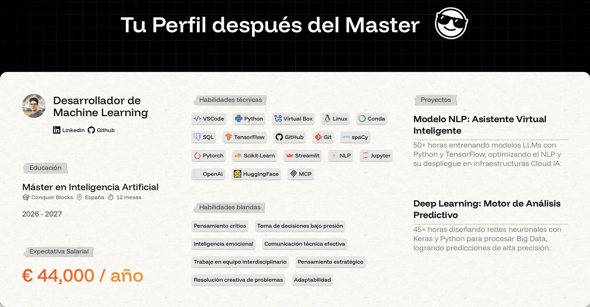

Máster en Inteligencia Artificial
Especialízate en Inteligencia Artificial con una formación práctica y aplicada, guiada por profesionales activos en la industria. Diseña, entrena y despliega modelos de IA y prepárate para acceder a oportunidades reales en el sector tecnológico.
La Inteligencia Artificial está transformando el mundo, y contar con el conocimiento adecuado es la clave para liderar el cambio. Con nuestro Máster en Inteligencia Artificial, aprenderás a crear sistemas inteligentes capaces de aprender, adaptarse y tomar decisiones. Desde el análisis de datos hasta el entrenamiento de modelos predictivos..
Conviértete en el profesional en Inteligencia Artificial que las organizaciones están buscando. Diseña, entrena y despliega modelos de IA aplicados a problemas reales, crea soluciones basadas en datos, automatiza procesos y desarrolla sistemas inteligentes escalables. Hazte indispensable en un entorno donde la eficiencia, la innovación y la toma de decisiones basada en datos están redefiniendo el futuro tecnológico.
